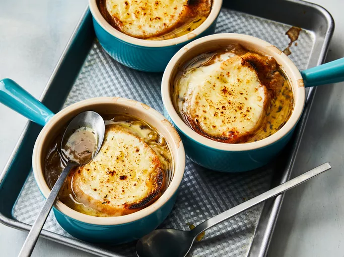

Onion Soup Recipe
Home page

Super easy french onion soup that has been in restaurants for years.Simple French Onion Soup is easy to make and for the simplicity of making this dish
the taste will always surprise you.
French onion soup, is a classic French dish made with caramelized onions and beef stock or broth
The soup is topped with bread and cheese, then gratineed to rich, gooey perfection
ingredients:
- 1/2 cup unsalted butter
- 2 ts olive oil
- 4 cups sliced onions
- 5 cups beef broth
- 2 tablespoons dry sherry
- 1 ts dried thyme
- 1 pinch salt and pepper to taste
- 4 slices French bread
Directions
-
Gather all ingredients
-
Melt butter with olive oil in an 8-quart stock pot over medium heat. Add onions
to butter and continually stir until tender and translucent. Do not brown the onions
-
Add beef broth, sherry, and thyme. Season with salt and pepper. Let simmer for 30 minutes
Meanwhile, preheat the oven's broiler.
Home page